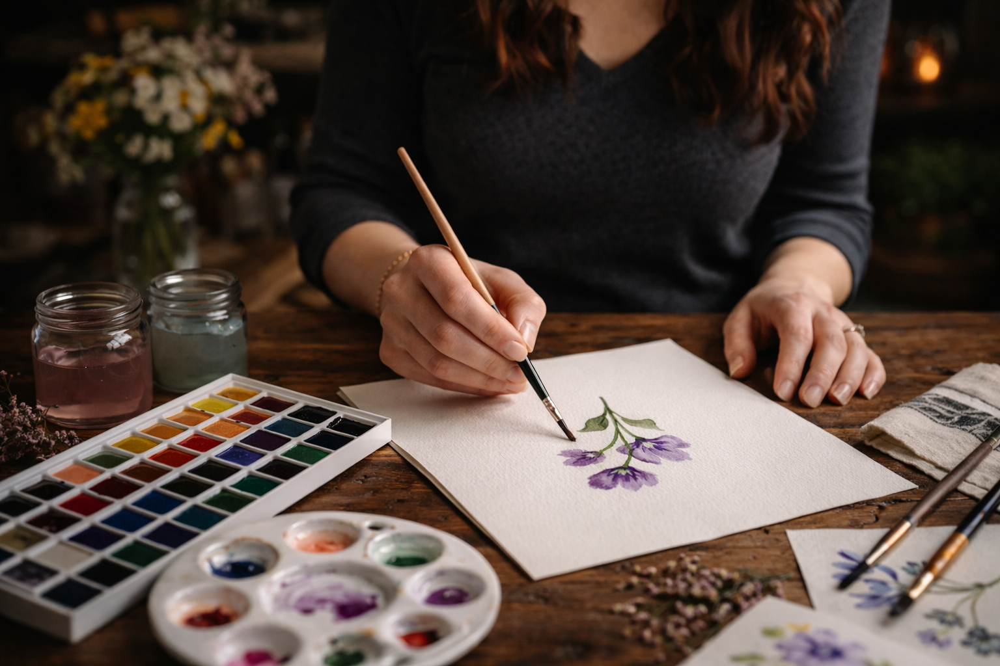

Art
Art has always been at the center of Leigh's life. From a young age, she was drawn to painting and other creative outlets as a way to express herself and make sense of the world around her. It wasn't just something she enjoyed, it was something that shaped how she thought and who she wanted to become. That early passion for art would eventually guide many of her decisions, influencing both her education and her career path.